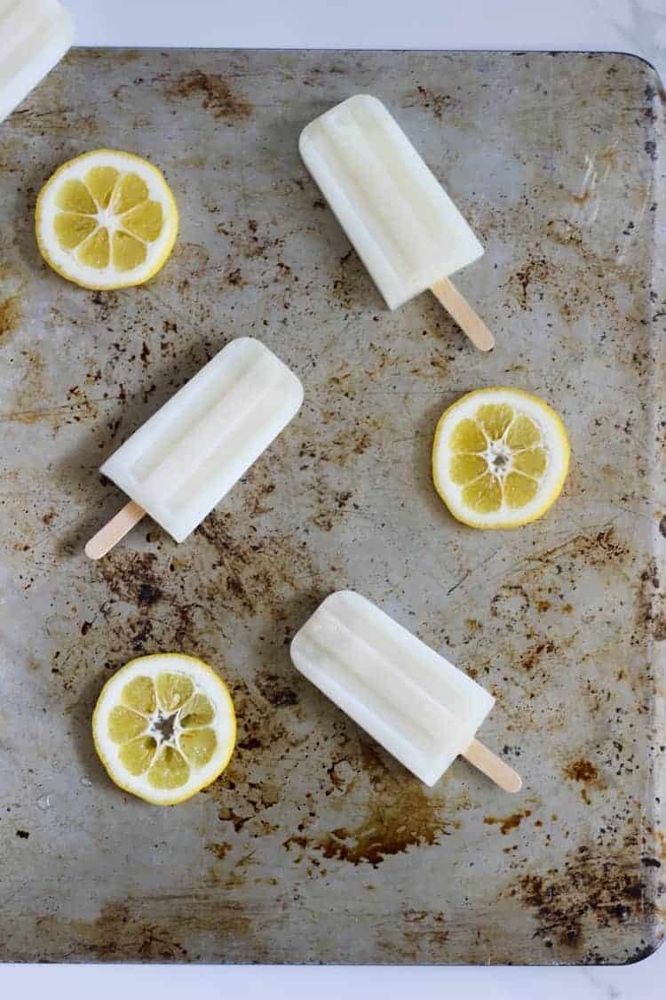

Home
Lemonade Ice Blocks

Description
You will always have a stash of these homemade lemonade ice blocks in your freezer. They are sweet, refreshing and the best summer treat!
Prep Time
15 mins
Freezing Time
5 hours
Servings
8 ice blocks
Ingredients
- 3 cups water
- 1 cup sugar
- Zest from 1 lemon
- ½ cup lemon juice (about 1 large lemon)
Directions
- Add hot water, sugar and lemon zest to a small pot. Bring to the boil, stirring to dissolve the sugar, and simmer for 5 minutes. Remove from the heat and stir in lemon juice. Strain through a sieve to remove the lemon zest and any pips that have made it in.
- Pour into ice block moulds and freeze for 5 hours or until frozen solid.